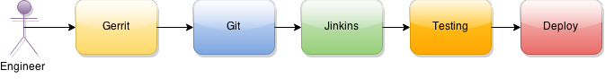

Gerrit
The Git Based Code Review System

Agenda
- What is gerrit
- Gerrit work flow
- examples
- Gerrit plugins
What is gerrit
Gerrit is a key component of morden CI/CD pipe line
What is gerrit Cont.
Web based code review system for Git based projectsWhat is gerrit Cont.
showing changes in a side-by-side displayWhat is gerrit Cont.
allowing inline comments to be added by any reviewerWhat is gerrit Cont.
submit git changes with one-click
Gerrit work flow

Engineer has no write access to the main git repo
the only push point is through gerrit!
Gerrit comment
Gerrit review
Plugins for automation
- PR number/rules checking
- Static code checking
- Jeckins build testing
- replication to main git repos
- push reviews to other system
- more others ...